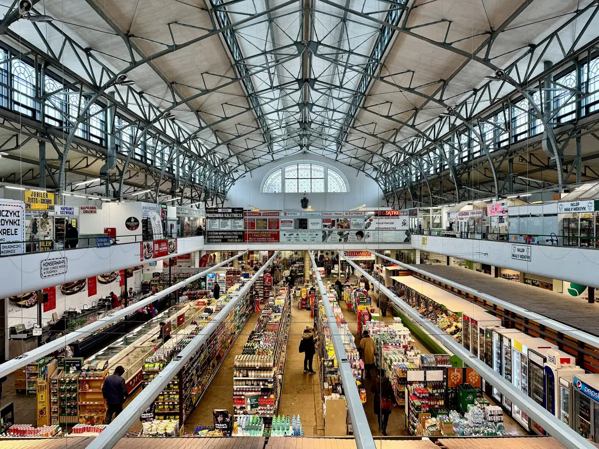

Postaw na Polskie. Niech zostanie tutaj.
Każdy paragon to decyzja o tym, gdzie trafią Twoje pieniądze. Kiedy kupujesz od firmy z Polski, zostaje tu więcej: pensje, podatki, zysk, który wraca do inwestycji. Nie trzeba przepłacać. Wystarczy sprawdzić.
Kampania społeczna. Bez polityki, bez bojkotów.

Metryczkanr 001
- Siedziba
- w Polsce
- Produkcja
- w Polsce
- Kapitał
- polski
- Podatki
- płacone tutaj
- Kupujący
Sprawdzone według jawnych kryteriów
Każdy paragon ma adres.
Wpisz, ile wydajesz miesięcznie na zakupy. Pokażemy, w którą stronę mogą płynąć te pieniądze.
Kod jednej złotówki
Sto kresek, sto groszy. Ciemne zostają w Polsce.
79gr
zostaje w kraju
Symulacja Grant Thornton, 2019. Produkty firm zagranicznych wytwarzane w Polsce leżą pomiędzy.
Gdyby 1% wydatków wszystkich Polaków przesunąć z produktów zagranicznych na polskie:
+6,6 mld zł rocznie
Grant Thornton, 2019 (baza: konsumpcja 2018 r., 1216,3 mld zł).
Polskie nie z sentymentu. Z rachunku.
Patriotyzm gospodarczy to nie emocja. To prosta mechanika: pieniądz wydany tutaj pracuje tutaj dłużej.
-
Pensje
46,6%
PKB wytwarzają małe i średnie firmy. Pracuje w nich 6,9 mln osób, które wydają pensje w Twojej okolicy.
PARP, Raport o stanie sektora MŚP 2025 (PKB: dane 2022, pracujący: 2023).
-
Podatki
86,6 mld zł
wpływów z CIT w 2024 r. Firma z siedzibą w Polsce rozlicza tu podatek dochodowy. Z niego są szkoły, drogi, szpitale.
Ministerstwo Finansów, odpowiedź na interpelację nr 15986, 2.04.2026.
-
Zysk, który zostaje
63,6 mld zł
dywidend wypłacili inwestorzy zagraniczni w 2024 r. (w 2020 r.: 34,7 mld zł). Uczciwie: 56,4 mld zł reinwestowali w Polsce.
NBP, Dochody zagranicznych inwestorów bezpośrednich w Polsce w 2024 r., tab. 3.
Tu jest Twoja półka.
Firmy z Polski, sprawdzane według jawnych kryteriów. Każda ma metryczkę.
-
Okna dachowe
Fakro
- Siedziba
- Nowy Sącz
- Kapitał
- polski
Założona w 1991 r. w Nowym Sączu. Eksport to 70% sprzedaży (2023).
Źródło: fakro.com, historia firmy
-
Kosmetyki
Ziaja
- Siedziba
- Gdańsk
- Kapitał
- polski, rodzinny
Ok. 504 mln zł przychodu w 2024 r., o 9,5% więcej niż rok wcześniej.
Źródło: Wiadomości Kosmetyczne
-
Żywność i napoje
Maspex Tymbark, Kubuś, Łowicz, Lubella
- Siedziba
- Wadowice
- Kapitał
- polski
Ok. 16 mld zł przychodów w 2024 r.
Źródło: Forbes.pl
-
AGD
Amica
- Siedziba
- Wronki
- Kapitał
- polski
Ponad 2,4 mld zł przychodów grupy w 2025 r.
Źródło: Amica Group
-
Odzież
LPP Reserved, Sinsay, Mohito
- Siedziba
- Gdańsk
- Kapitał
- polski
23,1 mld zł przychodów w 2025 r. i 3748 sklepów w 35 krajach.
Źródło: LPP, relacje inwestorskie
-
Meble biurowe
Nowy Styl
- Siedziba
- Krosno
- Kapitał
- polski, rodzinny
306,7 mln € przychodu w 2024 r.
Źródło: Nowy Styl, informacja o firmie
Prototyp: dane marek z researchu kampanii (XI 2026), weryfikowane przed publikacją.
Przeglądaj katalog
Polskie to adres, nie pochodzenie.
Polska firma to firma, która tu ma siedzibę, tu produkuje i tu płaci podatki. Jej założycielka może pochodzić z Wrocławia, z Kijowa albo z Lyonu. Dla Twojej okolicy liczy się, gdzie trafia pensja i podatek.
Podpisz pod paragonem.
- Kiedy mam porównywalny wybór, sprawdzam, czy produkt jest z Polski.
- Raz w miesiącu świadomie kupuję coś od polskiej firmy, której wcześniej nie znałem(-am).
- Gdy znajdę dobrą polską firmę, mówię o niej innym.
Trzy proste zobowiązania. Żadnych składek, żadnych bojkotów.